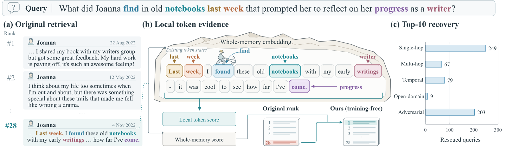
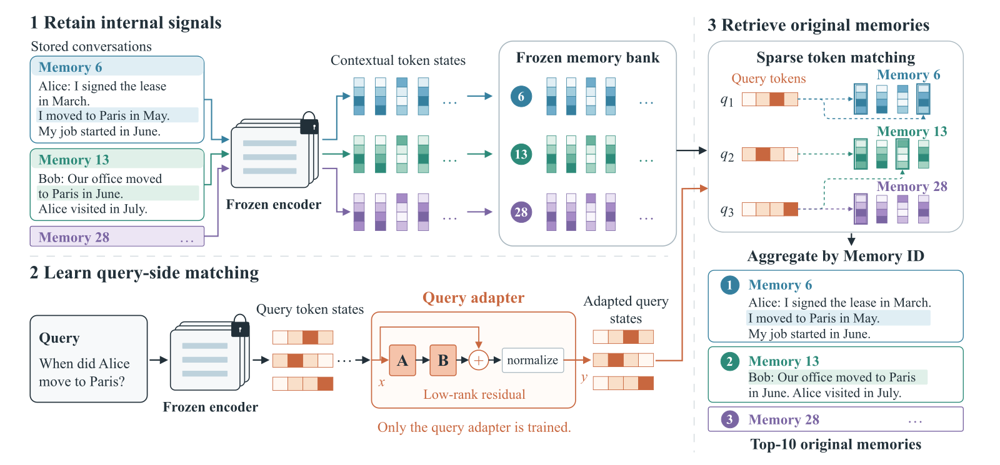
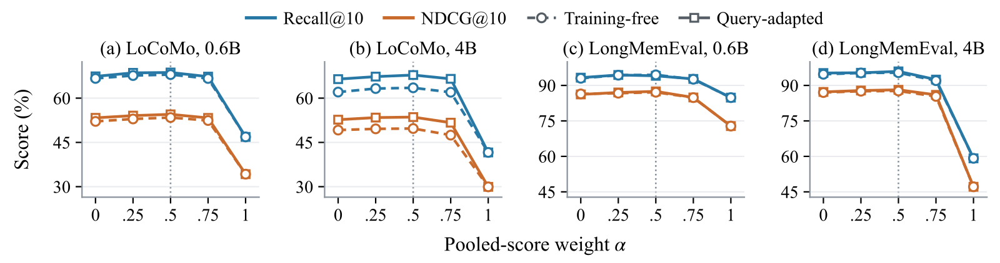

目录 · 10 节
1它到底在解决什么问题？2流程总览：存两份表示，查询时两路打分3稀疏 token 匹配：每个查询 token 只给少数记录加分4为什么还要整条相似度，以及怎么融合5只训练查询一侧的小修正6实验：提升有多大、从哪来7代价：存储和延迟8我认为它的局限9一个检索团队可以怎么试10评价做对话记忆、长文档问答或 RAG 检索的团队值得读这篇，因为它找到了一份现成却一直被扔掉的信号：向量模型在输出最终向量之前，已经给每个 token 算好了带上下文的表示，把它们存下来做 token 级匹配，不训练任何东西就能明显提高召回。核心思想一句话：整条记录的向量负责判断“话题像不像”，token 匹配负责找“哪条记录里真有这句话”，两路分数各自标准化后相加。在 Qwen3-Embedding-4B 上，八个评测集的平均 Recall@10 从 62.5 提到 73.8，再训练一个只改查询一侧的小模块到 75.7；代价是索引体积，完整的 token 索引比单向量索引大约 68 倍（我按论文表格算的），压成 4 bit 后仍大约 10 倍。
它到底在解决什么问题？
先看一个示意场景。一个聊天助手为某个用户存了几百条记忆，每条是一段对话。用户问“我上次说哪天去看牙医？”，候选里有三条：
| 记忆（示意） | 内容 | 和问题的关系 |
|---|---|---|
| A | 先聊了半天工作压力，最后一句“下周三下午去看牙” | 真正含有答案 |
| B | 专门聊口腔护理、电动牙刷怎么选 | 话题很像，但没有日期 |
| C | 聊周末去医院看望家人 | 有“医院”“周末”，无关 |
单向量检索把每条记忆压成一个向量，再和问题向量算点积。B 整段都在聊牙，向量最像问题；A 的大部分篇幅在讲工作，那一句“下周三去看牙”被平均掉了。单向量打分只能回答整体像不像，回答不了里面有没有那一句，而记忆检索偏偏常常是后一种问题。
论文图 1 是一个真实例子：只用整条向量时，相关记忆排第 28 名，加上 token 匹配后升到第 1 名。附录的统计更说明问题。LoCoMo（一个长期对话记忆评测集）共有 1,976 个问题，其中 607 个原来前 10 名里一条相关记忆都没有，换成融合打分后至少找回一条；反方向变差的有 84 个，净增 523 个。这些找回分布在不同题型里，但不是每一类都净赚：开放域问题找回 9 个、变差 10 个，基本持平。

这个思路和 ColBERT 很像，都是让查询的每个 token 去和文档的 token 比。区别在于 ColBERT 要专门训练一个 token 级编码模型，而这篇直接复用手里冻结的通用向量模型，不改它的参数，也不改它原来的整条向量。
流程总览：存两份表示，查询时两路打分

整个流程分三步：
| 阶段 | 输入 | 做什么 | 产出 |
|---|---|---|---|
| 建库（一次性） | 每条记忆的标题和正文 | 冻结模型跑一遍前向 | 一个整条向量 + 每个内容 token 的最后一层表示，都做 L2 归一化，token 表示存 FP16 并记下所属记忆编号 |
| token 匹配 | 查询的每个内容 token 的表示 | 在候选记忆的全部 token 上做 HNSW 近邻搜索，取前 64 个 | 每条记忆一个局部分 |
| 融合 | 局部分和整条点积分 | 两路分数在当前候选集合里各自标准化，按 0.5 和 0.5 相加 | 最终排序 |
几处细节决定了这个方法能不能直接用。第一，存的只是“内容 token”：指令前缀、填充位、特殊 token 都不存，整条向量照模型原来的方式池化（Qwen 取最后一个有效 token，Llama 系列取平均）。第二，记忆的编码和查询无关，所以建一次库可以被所有查询复用；后面讲的查询适配模块训练时，这份库也不需要重算。第三，每个查询的候选记忆集合是评测协议给定的，比如一位用户的一段长对话拆出的几百条记忆，token 搜索只在这个集合里做，不是在全站语料上做。论文测存储和延迟用的就是一个 568 条候选的 LoCoMo 记忆库。
下面拆开讲 token 匹配和融合。
稀疏 token 匹配：每个查询 token 只给少数记录加分
为什么不直接让每条记忆和查询算 MaxSim？MaxSim 是 ColBERT 的打法：对查询的每个 token，在一条记忆自己的所有 token 里找最像的那个，把这些最高相似度平均起来。它要对每条候选把所有 token 都比一遍。这篇换了一个方向：每个查询 token 先在所有候选的全部 token 里做一次全局近邻搜索，只取回最像的 k 个（k=64），再看这些 token 各属于哪条记忆。
麻烦在于没被取回的记忆。某个查询 token 的前 64 个匹配可能集中在三四条记忆里，其余几百条记忆在这个 token 上就没有分。如果记 0 分，排在第 65 名的那个 token 和第 64 名只差一点相似度，所在记忆的得分却差了一整截。作者借用 XTR（一种只取回部分 token、再估算缺失分数的检索方法）的做法补分：把取回的第 64 个、也就是最不像的那个匹配的相似度当作“兜底分”（小于 0 时取 0），记作 。没被取回的记忆在这个 token 上拿兜底分；被取回的记忆拿“它被取回的 token 里最高的相似度”和兜底分中较大的那个。最后对查询的所有 token 取平均：
是查询的内容 token 数， 是第 个查询 token 取回的 64 个记忆 token， 是归一化后的 token 表示，点积就是余弦相似度。兜底分对同一个查询 token 的所有记忆都一样，所以只有比兜底分更高的匹配才会拉开记忆之间的差距。
用开头的例子手算一遍（示意，把 k 缩小到 3）。问题只算两个内容 token：“牙医”和“哪天”。
- “牙医”取回的前 3 个：A 里的“看牙”0.82、A 里的“牙科”0.78、C 里的“医院”0.55。兜底分是第 3 个的 0.55。A 拿 0.82；C 的最好匹配正好等于兜底分，拿 0.55；B 一个都没被取回，也拿 0.55。这说明 C 那个“医院”虽然被取回了，却没比没被取回的 B 多拿一分。
- “哪天”取回的前 3 个：B 里的“每天”0.60、A 里的“下周三”0.58、C 里的“周末”0.50。兜底分 0.50。A 拿 0.58，B 拿 0.60，C 拿 0.50。“哪天”这类泛泛的词在各条记忆里都有差不多的匹配，所以三条只差零点零几，对排序影响小。
- 平均后：A 为 0.70，B 为 0.575，C 为 0.525。A 靠“牙医”这个 token 上的独有匹配排到第一。
如果把兜底分换成 0，B 在“牙医”上就是 0 分，局部分只剩 0.30，比 C 还低很多，可 B 其实也在聊牙。论文的对照实验支持兜底分的必要：在两个 Qwen 模型、两个对话数据集上，把兜底分改成 0，Recall@10 掉 1.61 到 7.14 个点。反过来，把近似的 HNSW 搜索换成精确搜索，Recall@10 只变化 −0.06 到 +1.62 个点。这说明补上没取回的分比消除近似搜索的误差重要得多。
稀疏匹配为什么比 MaxSim 好？结果是确定的：在同样的融合和查询模块下换成 MaxSim，Qwen-4B 的平均 Recall@10 掉 3.4 个点。按我的理解，MaxSim 让每条记忆在每个查询 token 上都拿自己最好的匹配，记忆越长、token 越多，这个「自己最好」的分数越容易被抬高，哪怕它放到全部候选里只算中等；全局前 64 加兜底分只让排进全局前 64 的匹配拉开差距，排不进的一律记成兜底分，靠长度攒出来的中等分数就不再起作用。反过来，如果某条无关记忆的某个 token 碰巧排进了全局前 64，它照样会被计入，这一点兜底分挡不住。
为什么还要整条相似度，以及怎么融合
token 匹配只看局部，会漏掉“整体讲的就是这件事、但用词完全不同”的记忆。整条点积每条候选都有分，正好补上：一条记忆即使一个 token 都没被取回，也能靠整条相似度进入前 10。
两路分数的量纲不同，不能直接相加。作者对每个查询单独做标准化：在当前候选集合里算出每一路分数的平均值和标准差，每条记忆的分数减去平均值再除以标准差（标准差下限 ）。之后按权重相加：
是标准化后的分数， 是整条相似度的权重，默认 0.5。因为标准化是逐个查询做的，换一个模型、换一个候选集合，两路分数都还在同一个尺度上，所以 0.5 这个默认值能在八个模型上通用。

这张图说明了收益的来源：α=1 时 Qwen-4B 在 LoCoMo 上的 Recall@10 只有 40 出头，α=0 已经和 0.5 很接近。也就是说，提升主要来自 token 匹配这一路，整条相似度在此基础上再补约 1 个点（去掉融合、只留局部分，Qwen-4B 的平均 Recall@10 从 75.7 降到 74.5）。
只训练查询一侧的小修正
如果手里有一些“问题—相关记忆”的标注，可以再训练一个很小的查询适配模块。它是一个秩为 32 的低秩残差：对查询的每个 token 表示 算 ， 和 在所有位置共享，再把结果缩放回原来的长度，所以它只改方向、不改长度。 初始化为 0，训练开始时等于没改。参数量是 ，Qwen-4B 的 ，约 16 万个参数（我算的）。
这个模块只改查询 token 的表示，只用于 token 匹配那一路。查询的整条向量、编码模型、记忆库里的所有表示都不动，所以训练前后记忆库不需要重建。
训练有一个绕弯：推理时的前 64 近邻是离散选择，没法求梯度。作者训练时改用 MaxSim 打分（对每条候选的全部 token 取最大），用多正例的 softmax 交叉熵（温度 0.07）把相关记忆的分数推高；推理时再把训练好的模块接回稀疏匹配。训练数据只有 1,024 个问题、256 个验证问题，来自 EvoTrain-180K，跑 25 轮，按验证集挑检查点。
效果不稳定：Qwen-4B 上平均 Recall@10 加 1.9 个点，Qwen-0.6B 只加 0.3，Llama-3B 反而略降 0.1，EmbeddingGemma 不变。所以不训练的版本才是这篇的主体。
实验：提升有多大、从哪来
评测按 LMEB（一个记忆检索评测基准）的协议，八个数据集共 5,873 个问题：三个对话记忆集（LoCoMo、LongMemEval、REALTALK），五个文档集（ESG 报告、两份科学论文问答、新冠文献问答、一个长文档检索集）。指标是各集 Recall@10 和 NDCG@10 的平均。同一个模型下的对照方法都用完全相同的输入。
| 方法（Qwen3-Embedding-4B） | 平均 Recall@10 | 平均 NDCG@10 |
|---|---|---|
| 原始整条向量 | 62.5 | 48.0 |
| BM25 + 原始向量（同样标准化后各占一半） | 69.7 | 56.6 |
| Search-Adaptor（训练一个整条向量的适配器） | 66.9 | 52.3 |
| 冻结 token 表示直接做 MaxSim | 67.8 | 54.3 |
| ColBERTv2（独立系统） | 70.8 | 59.5 |
| 本文，不训练 | 73.8 | 59.9 |
| 本文，加查询适配 | 75.7 | 62.3 |
这张表说明三件事。第一，不训练的版本已经超过专门训练的 ColBERTv2。第二，便宜的 BM25 混合检索已经拿到一大半收益：从 62.5 到 69.7，占不训练版本总提升的约 64%（我算的），而 BM25 索引只有 0.23 MiB。第三，同样用这份 token 表示，直接 MaxSim 只有 67.8，稀疏匹配加融合多出 6 个点，打分方式本身很关键。
收益在对话记忆上最大。Qwen-4B 在 LoCoMo 上从 41.6 到 67.8，在 LongMemEval 上从 59.2 到 95.9。后一个数字要打折看：同一张表里更小的 Qwen-0.6B 在 LongMemEval 上原始就有 84.8，说明 4B 的原始向量在这个集上异常弱，大涨里有一部分是在补这个短板。
换成其他模型，八个全部提升，但幅度和起点有关：EmbeddingGemma-300M 从 72.8 到 79.8，Llama-Embed-Nemotron-8B 从 76.8 到 79.2，Llama-NV-Embed-Reasoning-3B 从 77.9 到 79.6。这意味着原始向量越强，token 匹配能补的空间越小，但没有一个是负的。
切块能不能替代 token 匹配？作者用 Chunk-MaxP 做了对照：把记忆切成 512 token 的块（重叠 64），每块单独编码，取最高的一块。它的结果和原始向量几乎一样。在 Qwen-0.6B 的 LoCoMo 上把窗口缩到 128、64、32 token，Recall@10 也只在 44.99 到 46.87 之间，而原始向量是 46.87，本文不训练是 67.98。这说明收益不是来自“切得更细”：独立编码的小块丢了上下文，而这里的 token 表示是在整条记忆的上下文里算出来的。
下游问答也跟着变好。作者用 Qwen3-30B-A3B 读取前 10 条记忆回答，用 GPT-4o-mini 判对错。Qwen-4B 上 LoCoMo 准确率从 63.44% 到 67.86%，LongMemEval 从 67.80% 到 72.60%。八个模型在 LoCoMo 上全部提升；LongMemEval 上七个提升，只有 Qwen-8B 从 74.0% 微降到 73.8%。这说明检索指标的提升确实能传到最终答案上，而不只是排序指标好看。
代价：存储和延迟
| 方法（LoCoMo，568 条候选的记忆库） | Recall@10 | 索引大小 (MiB) | 单次查询 (ms) |
|---|---|---|---|
| BM25 | 48.28 | 0.23 | 0.76 |
| ColBERTv2 | 61.82 | 1.54 | 27.27 |
| Qwen-0.6B 原始向量 | 46.87 | 2.23 | 16.66 |
| 本文 0.6B，完整索引 | 68.53 | 153.93 | 29.21 |
| 本文 0.6B，4 bit 标量量化 | 68.37 | 26.17 | 21.68 |
| Qwen-4B 原始向量 | 41.60 | 5.56 | 22.71 |
| 本文 4B，完整索引 | 67.93 | 376.65 | 35.12 |
| 本文 4B，4 bit 标量量化 | 68.51 | 57.27 | 33.15 |
存储是主要成本，因为完整索引给每个 token 存一个 1024 或 2560 维的 FP16 向量，0.6B 上的体积是单向量索引的约 69 倍。
4 bit 标量量化几乎不掉效果，两个模型八个任务平均下来 Recall@10 反而高 0.33 个点，体积降了八成多。但量化后仍是单向量的十倍上下，而 ColBERTv2 自带残差压缩，同一个库只要 1.54 MiB，比量化后的本文还小十几倍。所以本文赢的是效果，不是存储。
还能再压：先随机投影到 128 维再量化，0.6B 的索引降到 10.70 MiB。代价是效果掉得更多，4B 上 Recall@10 从 67.93 降到 63.09，说明大模型的 token 表示经不起这么粗的投影。延迟方面，量化版本在 0.6B 上比原始向量每次多约 5 毫秒，在 4B 上多约 10 毫秒（我按表算的），这些数都包含查询编码，对记忆检索来说可以接受。
我认为它的局限
第一，规模只验证到“单个用户的记忆库”。每个查询的候选是评测给定的几百条记忆，568 条的库就要 154 到 377 MiB，LongMemEval 的一个库在 4B 上达到 1460 MiB。放到百万条文档的通用语料上，token 数会多出几个数量级，论文没有这个规模的实验。它更适合天然按用户或会话分库的记忆场景。
第二，平均提升被个别弱基线放大了。Qwen-4B 不训练版本平均提升 11.3 个点，其中 LongMemEval 一个集从 59.2 涨到 95.4，摊到八个集的平均里就占了约 4.5 个点（我算的），而这正是 4B 原始向量的短板；强模型上的提升只有 2 到 3 个点。BM25 混合检索在 4B 上已经拿到约 64% 的收益，成本几乎为零。所以标题数字不能直接当成换到自己模型上的预期。
第三，延迟只在 8 个固定查询上测，每个重复 5 次取中位数，候选库也只有 568 条，HNSW 用单线程。真实服务的尾延迟和并发表现没有数据。
一个检索团队可以怎么试
- 先在自己的记忆或长文档评测集上跑 BM25 + 向量的混合检索，用同样的逐查询标准化、各占一半。这是最便宜的对照，能先看出“局部词面匹配”在你的数据上值多少。
- 再存下现有向量模型最后一层的内容 token 表示，按 k=64、兜底分、α=0.5 实现稀疏匹配和融合，直接用 4 bit 量化。看它比混合检索多出多少，多出的部分才是 token 表示的真实价值。
- 按真实的库大小测每条记忆的存储和每次查询的延迟。如果库能按用户或会话切分，规模和论文接近，可以直接上；如果是全局大库，要先算清 token 索引的内存。
- 有标注数据时最后再试查询适配模块，用验证集确认它在你的模型上确实是正收益。
评价
同一个向量模型里，token 表示和整条向量是两份互补的信号，前者一直被白白扔掉，这是这篇最值得带走的东西。
| 维度 | 评价 |
|---|---|
| 问题重要性 | 高。对话记忆和长文档里“答案只在一句话里”的情况很普遍，单向量检索在这上面系统性吃亏 |
| 方法创新性 | 中。全局 token 搜索和兜底分来自 XTR，冻结模型复用 token 表示也有前作，贡献在组合方式和充分的对照 |
| 实验证据 | 中高。八个模型、八个数据集，有切块、BM25 混合、精确搜索、兜底分等对照，还有下游问答；缺大规模语料和线上数据 |
| 工程成本 | 中高。不用训练，但索引是单向量的十倍以上，还要多维护一个 HNSW |
| 是否值得尝试 | 值得，前提是库能按用户或会话切小。先和 BM25 混合检索比，确认多出来的收益配得上存储 |
| 适用场景 | 聊天助手长期记忆、按用户隔离的文档问答、长对话 RAG |
读完这篇，你觉得
夜读鸮记下了，谢谢你的反馈。
点一下即可，无需登录；再点一次撤回。只统计匿名次数，不记录你是谁。
讨论
欢迎补充实验细节、复现经验或不同看法。需 GitHub 登录。
正在加载讨论…